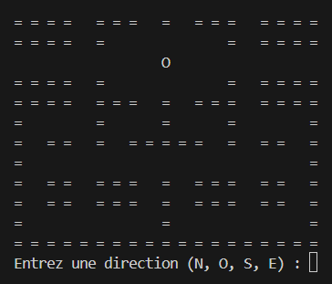
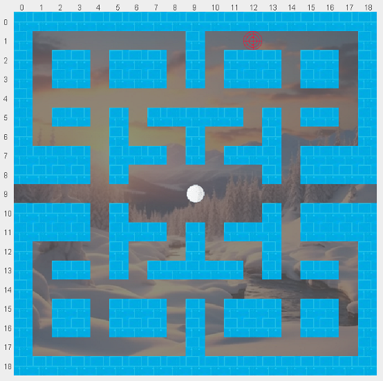
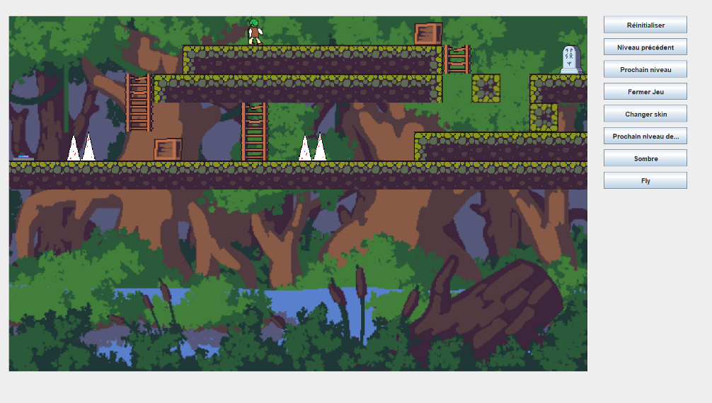

Aperçu du Projet
SAE 1.01 est un projet de développement d'un jeu de labyrinthe en Java, réalisé en équipe de 5 personnes. Le projet s'articule autour de 5 exercices progressifs, depuis l'implémentation basique d'un labyrinthe jusqu'à la création d'un jeu complet avec mécaniques avancées, ennemis, et système de niveaux.
🎯 Objectif Principal
Implémenter progressivement un jeu d'aventure complet en appliquant les principes de la programmation orientée objet et l'architecture MVC.
🛠️ Technologies
- Java (Swing pour l'interface graphique)
- Architecture MVC
- Programmation orientée objet
- Gestion de fichiers
Progression par Exercices
📋 Exercice 1 - Labyrinthe de Base
Objectif : Initialisation et manipulation d'un labyrinthe simple
- Lecture de grille depuis un fichier
- Gestion des déplacements de base
- Détection de sortie
- Interface console simple
🎮 Exercice 2 - Architecture MVC
Objectif : Implémentation du pattern MVC avec interface utilisateur
- Séparation Modèle-Vue-Contrôleur
- Interface console interactive (IhmCui)
- Gestion des entrées utilisateur
- Boucle de jeu principale
🖼️ Exercice 3 - Interface Graphique
Objectif : Transition vers une interface graphique avec Java Swing
- Interface graphique avec FrameGrille
- Affichage visuel du labyrinthe
- Gestion des événements clavier
- Intégration graphique du modèle
🎨 Exercice 4 - Sprites et Visuel
Objectif : Amélioration visuelle avec sprites et textures
- Intégration de sprites (personnages, murs, sol)
- Gestion des ressources graphiques
- Amélioration de l'expérience utilisateur
- Optimisation de l'affichage
🏆 Exercice 5 - Jeu Complet
Objectif : Développement d'un jeu d'aventure complet
- Mécaniques avancées : Saut, vol, obscurité
- Système d'ennemis : Goomba avec IA
- Objets interactifs : Caisses, boutons, pièges
- Système de niveaux : 11 niveaux progressifs
- Personnages multiples : Shrek, Link, Astérix, Indiana, Lim
- Inventaire et items
Fonctionnalités Techniques Implémentées
⚙️ Architecture
- Pattern MVC : Séparation claire des responsabilités
- POO avancée : Héritage, encapsulation, polymorphisme
- Gestion mémoire : Optimisation des ressources
🎮 Mécaniques de Jeu
- Système de collision : Detection précise
- Intelligence artificielle : Ennemis avec comportements
- Physique simple : Gravité, saut, vol
- Interactions : Objets, portes, mécanismes
💾 Gestion des Données
- Lecture fichiers : Grilles et configurations
- Sauvegarde état : Progression joueur
- Ressources : Images, sons, données
Captures d'Écran du Projet
📸 Evolution du projet à travers les différentes étapes du développement
🖥️ Interface Console (Exercice 1-2)
Affichage en mode texte avec navigation clavier
🎨 Interface Graphique Basique (Exercice 3)
Première version graphique avec Java Swing
🏆 Jeu Final (Exercice 5) - Version Complète
Version finale avec ennemis, mécaniques avancées, système de niveaux et personnages multiples
Compétences Développées
🔧 Compétence 1 - Réaliser un développement d'application
- Implémentation : Conception et codage de 5 exercices progressifs
- Architecture : Application du pattern MVC
- Qualité du code : Respect des bonnes pratiques Java
- Tests : Validation à chaque étape du développement
- Interface utilisateur : Console puis graphique
⚡ Compétence 2 - Optimiser des applications
- Algorithmes : Optimisation des déplacements et collisions
- Structures de données : Tableaux 2D, collections
- Performance : Gestion efficace des ressources graphiques
- Complexité : Analyse des algorithmes de pathfinding
📋 Compétence 5 - Conduire un projet
- Travail en équipe : Coordination de 5 développeurs
- Planification : Découpage en exercices progressifs
- Gestion des versions : Intégration du code d'équipe
- Documentation : Code commenté et structuré
👥 Compétence 6 - Travailler en équipe
- Communication : Coordination équipe de 5 personnes
- Répartition des tâches : Attribution des exercices
- Collaboration : Intégration des développements individuels
- Résolution de conflits : Gestion des versions et merge
Points Forts et Apprentissages
✅ Réussites
- Progression méthodique : Évolution claire du simple au complexe
- Architecture solide : MVC bien implémenté
- Travail d'équipe efficace : Bonne coordination sur 5 exercices
- Fonctionnalités avancées : IA, physique, système de niveaux
- Code de qualité : Commentaires et structure claire
🔄 Défis Rencontrés
- Coordination équipe : Synchronisation du développement
- Complexité croissante : Gestion de la dette technique
- Performance graphique : Optimisation des sprites
- Architecture évolutive : Adaptation aux nouvelles fonctionnalités
Évolution du Projet
Ce projet SAE 1.01 démontre une progression claire dans l'apprentissage du développement logiciel :
📈 Progression Technique
- Étape 1-2 : Bases algorithmiques et architecture
- Étape 3 : Interface graphique et interaction
- Étape 4 : Enrichissement visuel et UX
- Étape 5 : Jeu complet avec mécaniques avancées
🎯 Compétences Acquises
- Maîtrise de Java et de la POO
- Architecture logicielle (MVC)
- Développement d'interfaces graphiques
- Travail collaboratif en équipe
- Gestion de projet informatique